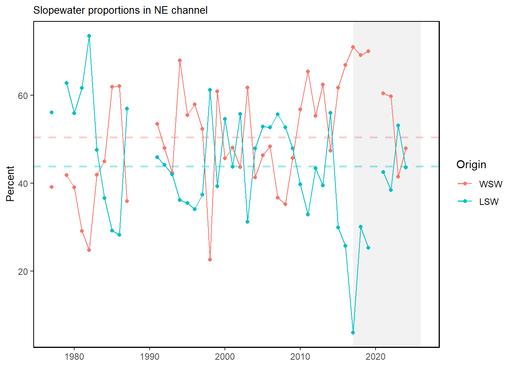

51 Slopewater Proportions
Last updated February 23, 2024
Description: This index gives the relative proportions of watermass type observed in the deep Northeast Channel (150-200 m water depth).
Contributor(s): Paula Fratantoni
Affiliations: NEFSC
Indicator Family:
Indicator Category:
Synthesis Theme:
51.1 Introduction to Indicator
Temperature and salinity measurements are examined to assess the composition of the waters entering the Gulf of Maine through the deep Northeast Channel. The analysis closely follows the methodology described by [82]. This method assumes that the waters flowing into the Northeast Channel between 150 and 200 meters depth are composed of slope waters, originating offshore of the continental shelf, and shelf waters, originating on the continental shelf south of Nova Scotia.
51.2 Key Results and Visualizations
No response
Mid-Atlantic
#> NULLNew England

51.3 Implications
No response
51.4 Indicator statistics
Spatial scale: Within the central Northeast Channel
Temporal scale: Annual
Variable definitions
51.5 Get the data
Point of contact: Paula Fratantoni (paula.fratantoni@noaa.gov)
ecodata dataset: ecodata::slopewater
Tech Doc link: https://noaa-edab.github.io/tech-doc/slopewater.html
51.5.1 Public Availability
Source data are publicly available.